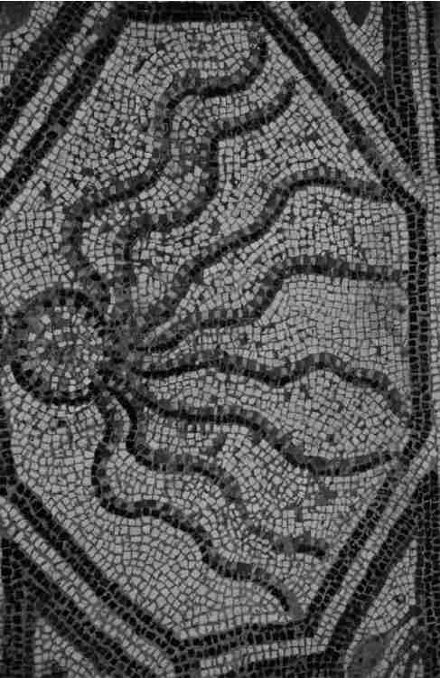

对于最后都会纳入欧几里得的纯科学之中的知识，我们该如何获得呢？我们如何与构成现实世界的物质相联系，又如何记录它们的变化呢？我们如何偶然间找到它们的因并进行解释呢？演绎逻辑不是答案所在：亚里士多德的三段论演绎法从未被视做寻找关于自然界的论据的一种方法——它提供的是一个用语言表述知识的系统，不是一个获得发现的途径。
在亚里士多德看来，知识的最终来源是感知。在两种意义上，亚里士多德是个十足的“经验主义者”，尽管这个词意义含糊。第一，他认为我们借以理解和解释实在的概念或观念都最终来自于感知；“因此，如果我们无法感知，我们就不会学习或理解任何事物；当我们想起某事物的时候我们必然同时想起一个概念”。第二，他认为所有科学或知识都最终建立在感知性观察之上。这也许没有什么令人吃惊的：作为一个生物学家，亚里士多德主要的研究工具就是他本人的或他人的官能感知；作为一个本体论者，亚里士多德主要的实在是普通的能感知到的物体。柏拉图在他的本体论中给予抽象的形式 以主导地位，从而把知识而非感知看做照亮实在的探照灯。亚里士多德则把可感知的细节放在中心位置，把官能感知作为他的火炬。
感知是知识的来源，但不是知识本身。那么，感知到的事实如何转变成科学知识呢？亚里士多德把这一过程描述如下：
我们感知特定的事实——此时此地这事是这样的（比如，苏格拉底头发正在变白）。这种感知也许留在大脑里变成了记忆。我们所感知的许多事实都彼此相似：不仅仅苏格拉底，而且卡利亚斯、柏拉图和尼各马可以及其他一些人都被看到头发变白了。因此我们逐渐有了一系列相似的记忆——相似感知的残留。当我们拥有这样的一系列记忆时，我们就拥有了亚里士多德所说的“经验”；经验转换成极类似于知识的东西，是在“全部一般概念进入大脑里”时，在这一系列特定记忆似乎被压缩成一个单一的观念时——这个观念即，通常所有的人头发都会变白。（我说的是“极类似于知识的东西”：知识本身直到我们理解头发变白的原因之后才形成，即直到我们懂得人在变老时头发变白是因为在他们变老时头发的色素就干枯了。）知识，总的来说，是由对感知的概括而产生的。
这一说法有待批评。首先一点，我们的大部分知识很明显不是通过亚里士多德所说的方式获得的。我们通常不需要进行大量的类似观测，就可以立即进行一般性地判断：我怀疑亚里士多德是否观察了一两只以上的章鱼通过交接腕交配；并且可以肯定他只解剖了非常少的几只对虾就对其内部结构进行一般性描述。他说一般性知识来自于特定观察，这在本质上也许正确，但要对实际过程进行令人满意的描述，在细节方面尚需进行相当的完善。
第二点，亚里士多德的说法会遇到一个哲学上的挑战。官能感知可靠吗？如果可靠，我们如何知道那就是感知？我们如何把幻觉和真正的感知区别开来？还有，我们由特定的观察推理到一般性真理合理吗？如何知道我们是否进行了足够的观察，我们的实际观察是否是所有可能的观察领域的合适标本？持怀疑态度的哲学家们多少世纪以来一直提出这类问题，这需要真正的亚里士多德学派的人予以回答。
亚里士多德意识到仓促概括存在的危险；比如，他曾这样说，“那些这样认为的人之所以无知，原因在于：动物间交配和生殖上的差异是多种多样的，并且不很明显，这些人观察了少数几个案例就认为在所有情况下都是一样的”。但是亚里士多德没有笼统地说由概括性所引发的问题：那些问题——后来被称为“归纳”问题——直到亚里士多德死后很长时间才得到详尽的哲学关注。对于感知问题，亚里士多德还有很多要说的。在他的心理学专题论述《论灵魂》里，他顺便评论说，感官的可靠性根据它们所指向的对象而有所不同。如果我们的眼睛告诉我们“那是白色的”，它们不太可能会错；而如果它们说“那白色的事物是雏菊”，错的可能性就大多了。《形而上学》第四卷仔细考虑了许多怀疑性观点，然后予以了化解。但是《论灵魂》里的评论没有任何论据支持，且亚里士多德在《形而上学》中对怀疑主义者的拒斥也是唐突的。他认为他们的观点没有经过认真地证明，因而不必认真地对待：“很明显，没有人——陈述论文的人和其他人都没有——事实上处于那种条件下。因为当一个人认为应该走到迈加拉时，他为何就会行走到那里而不是待在原地不动呢？为何他在早上不走到一口井里或者一片悬崖上，如果周围有那么一口井或一片悬崖的话？”亚里士多德还问道：“他们是否对以下问题感到真正的困惑不解：物体的尺寸和颜色对于远处的人和近处的人、健康的人和病人是否一样？对于病人来说是重的或对于强壮的人来说是重的，是否就是真正地重？对醒着的人来说是事实或对睡着的人来说是事实，是否就是真正的事实？”

图15“章鱼的触须既用做脚又用做手：它用嘴上的两个触须把食物送到嘴里；最后一个触须非常突出，……章鱼用它进行交配。”
如果有人使我确信我们对世界一无所知，然后我又看见他在穿过马路前小心地四下里张望着，我就不会拿他的话当真。而且总的说来，令人怀疑的话可以用这种方法被表明是不严肃的。也许就是这样，但是这与亚里士多德乐观认识论所遇到的哲学问题没什么关联。怀疑论者的观点可能很严肃，即使他本人不严肃。即使一个怀疑论者是个花花公子，他反对的理由也可能是一针见血的，并需要答复。亚里士多德也许本该更认真地对待怀疑论——但他不得不把骨头留给后来者去啃。